ライブドアブログでの作り方
ライブドアブログはカスタマイズがしやすく、テンプレートも豊富な無料ブログサービスです。
けれども、無料版では記事下広告がはずせないため、有料版のＰＲＯで作成すると使いやすいかもしれません。有料版にすると利用できるサブドメインの種類も増え、独自ドメインも設定することができます。
ライブドアブログ作り方の簡単手順
ライブブログの作り方はメールアドレスを用意してアカウントを取得し、記事を投稿するだけで簡単にできあがります。ブログのカスタマイズは詳細にできますが、「ＴＯＰ」や「カテゴリ」など、それぞれのページごとに設定する必要があるため、少し手間がかかります。
-
アカウントの取得にはメールアドレスが必要になりますが、持ってない場合はフリーメールなどを取得されるとよいでしょう。
メールアドレスを取得したらライブドアブログへ行きます。
「ブログを作る」のリンクをクリックします。
次のページでメールアドレスの入力すると、ライブドアからあなたのメールアドレスへ自動的に確認メールが送信されます。
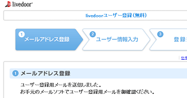
メールに記載されているリンクをクリックすることで確認が済み、プロフィールの入力欄に移るので、ブログのURLやパスワードを登録します。
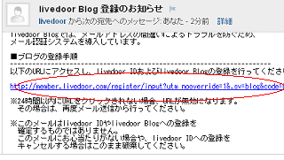
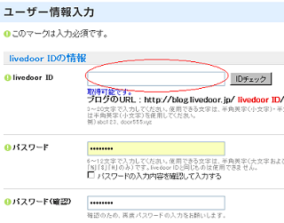
ありふれた単語では既に取得されていることが多いため、何度か検索してみるとよいでしょう。
この段階でとりあえずブログを表示してみると、このような感じになっているかと思います。
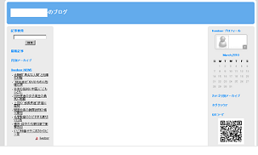
無料版で作成する場合、このままタイトルを変更したり、テンプレートを選んで記事を投稿していけば、とりあえずブログはできあがります。
けれども、ライブドアブログの場合、無料版だと、新着記事やランキングには反映されない仕組みです。
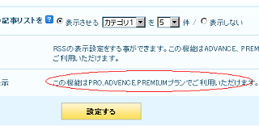
また、広告表示などもありますので、できるだけ有料版にした方が使いやすいかもしれません。この有料プランには３種類あります。
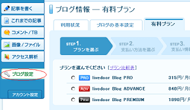
ただ、PROの場合は月額315円ですので年間だと3,780円です。
独自ドメインを取得して格安レンタルサーバーにCMSを設置した場合でも、だいたい年間3,500円程度で済むので、事前にそちらの方も検討してみることをおすすめします。
レンタルサーバーの格安情報同じような費用を出すなら、さくらのブログなども便利かと思います。
さくらのブログの作り方ライブドアを有料プランに変更する場合、支払い方法をいくつか選択できますが、ライブドアウォレットでのクレジット決済が一般的です。このライブドアウォレットを利用する際、「キー」を設定してクレジット登録をします。
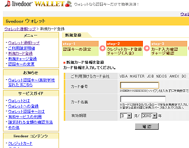
クレジット登録をすると、すぐに有料プランを利用できるようになります。
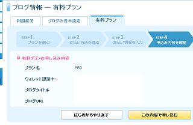
有料版へと移行したら、まずはじめに、ＵＲＬを変更されることをおすすめします。
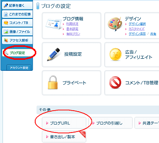
デフォルトの場合、「サブディレクトリ」でのＵＲＬになっていますが、有料版ではサブドメインの「livedoor.biz」や独自ドメインでの設定ができるようになります。
無料版でもサブドメインを使用することができますが、有料版にすると使えるサブドメインの種類も多くなります。
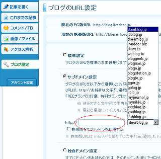
ここで、それぞれのサブドメインのインデックス数をグーグルで調べてみますと、livedoor.biz の人気が高いようです。
- site:doorblog.jp 229,000
- site:ldblog.jp 255,000
- site:dreamlog.jp 84,700
- site:livedoor.biz 3,330,000
ドメイン年数的な点からみても、livedoor.biz のサブドメインが使いやすいような気がします。このサブドメイン名も一般的なキーワードだと既に取得済みのケースが多いので、取得可能なのが見つかるまで検索しましょう。
できるだけ、作成しようとしているブログのテーマと関連性のあるＵＲＬがいいと思います。（例えば、エンタメ系ブログの場合、entame というキーワードをＵＲＬに含めるなど。）
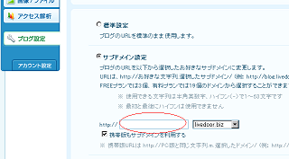
ちなみに、この独自ドメインで作成する場合は cname で設定する必要がありますが、設定自体はそれほど難しくはありません。独自ドメインで成人向けコンテンツで利用する場合などもライブドアは便利かと思います。
ドメインの設定が終わったら、ブログのタイトルを変更したり、必要のないブログパーツを削除しておきましょう。
ニュース記事などはほぼ必要ないものと思います。また、有料版にした場合は広告を削除することができるため、デフォルトで表示されている記事下広告の削除も忘れずにしておきましょう。
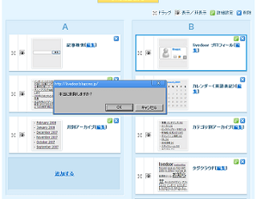
ライブドアでデザインを変更する場合、ＴＯＰページや個別エントリーごとに設定を変更する必要があります。
ＴＯＰページだけ変更してデザインを変更したとしても、カテゴリーや過去ログではそのままになっていますので、それぞれのページの設定を変更する必要があります。
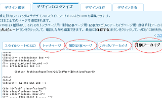
また、記事を投稿する際ですが、記事テーマなども使いながら更新するとアクセス数が増加していくかもしれません。
- FC2ブログの作り方
FC2ブログは利用者数も多く、html の編集やアフィリエイトも自由な人気の無料ブログサービスです。... - Seesaaブログの作り方
Seesaaブログはカスタマイズが可能な無料のブログサービスですので、詳細にブログを設定することができます。 当ブログは以前までSeesaaで作成していました。... - 無料ブログのAlexaランキングを比較
無料ブログのランキングをAlexaで比較してみました。国際ランキングと国内ランキングを比べてみますと、日本では専門のブログサービスが好まれる傾向にあるようです。...